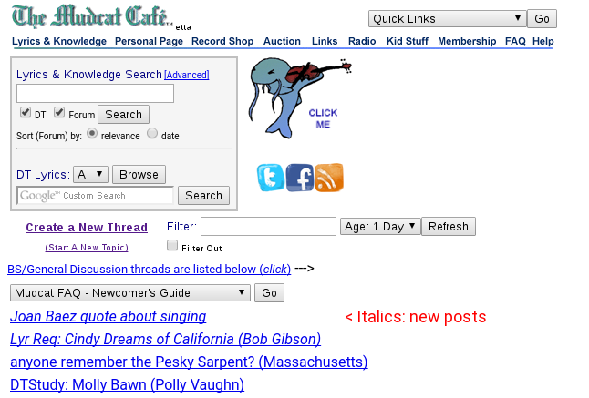

Mudcat Browser Tools
Browser Addon: Mudcat Browser Tools
This browser addon helps locate new posts on Mudcat by identifying which threads have new posts since you last viewed them and going straight to the first new post. It also adds some buttons to assist posting.

There is a Firefox and a Google Chrome version. Click on the yellow link to find out more.
Mudcat Browser Tools (Addon for Firefox and Firefox for Android.)
Mudcat Browser Tools (Chrome extension.)
The Microsoft Edge browser can run Google Chrome extensions.
You have to enable Chrome Extensions first:
How to Install Google Chrome Extensions in Microsoft Edge
Then install Mudcat Browser Tools from the yellow Google Chrome extension link.
v18/08-11-2020